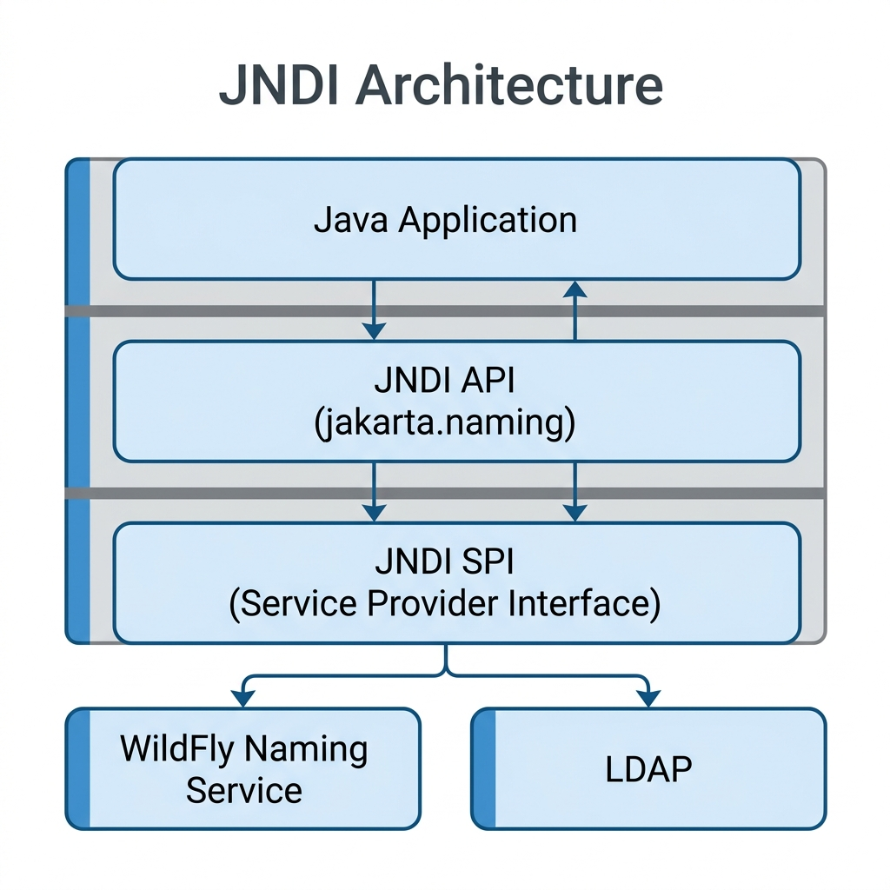
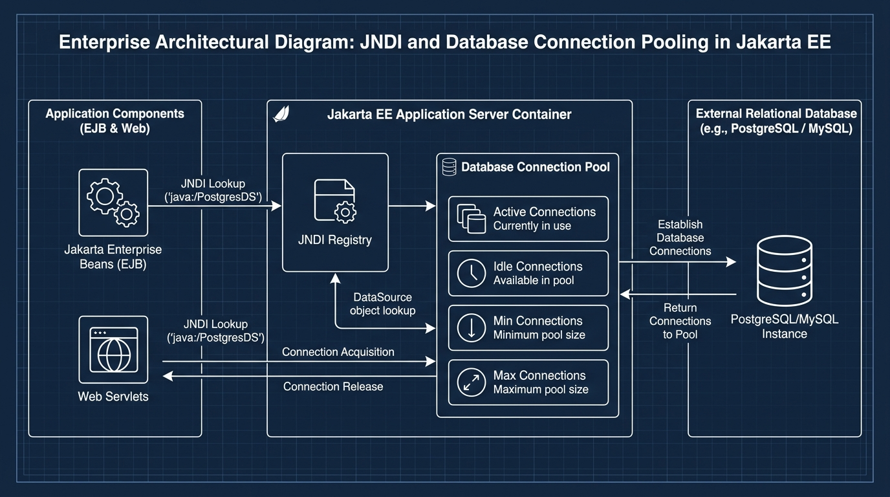

<title>Session 3 — Resources, JNDI and Connection Pools, Explained Slowly</title>
<meta name="viewport" content="width=device-width, initial-scale=1">
<meta name="description" content="Session 3, written for people who have never seen Jakarta EE before. What a resource is, how JNDI works as the server's address book, why connection pooling exists, and how a DataSource is configured and used.">
<link rel="stylesheet" href="assets/css/styles.css">
<script>window.PAGE = "s03";</script>

<main class="page">

  <h1>Session 3 · Resources, JNDI and Connection Pools, Explained Slowly</h1>
  <p class="lede">Your enterprise beans must never hardcode a machine address or a password, and must
    never open a raw database connection themselves. Instead they ask the server for a
    <strong>resource</strong> by name. The name registry is called <strong>JNDI</strong>, and the resource
    beans ask for most often is a <strong>DataSource</strong> backed by a <strong>connection pool</strong>.
    You do not need to know any of those words yet — every one is explained the moment it appears.</p>

  <div class="callout callout--key"><span class="callout__i">🎯</span>
    <div class="callout__b"><b>Four promises before we start</b>
      <ol style="margin:.6rem 0 0;padding-left:1.2rem">
        <li><strong>No jargon without a translation.</strong> Each new word gets a plain-English box.</li>
        <li><strong>Nothing is assumed.</strong> JNDI, DataSource and connection pool are all built up from
          nothing, in that order.</li>
        <li><strong>You can try the parts you cannot break here.</strong> Press <em>Run</em> and watch.</li>
        <li><strong>You will leave knowing the naming trap.</strong> Part 2 makes the
          <code>javax</code> versus <code>jakarta</code> question completely clear — this is the page where
          it finally sticks.</li>
      </ol>
    </div>
  </div>

  <h2>What you will be able to do by the end</h2>
  <p>Not a list of manual headings — just five things, in plain words:</p>
  <div class="tablewrap"><table>
    <thead><tr><th>By the end you can…</th><th>Where it is taught</th></tr></thead>
    <tbody>
      <tr><td>Say what a resource is, and why a bean must not create one itself</td><td>Part 1</td></tr>
      <tr><td>Read a JNDI name out loud and say which parts of the server can reach it</td><td>Part 2</td></tr>
      <tr><td>Explain why <code>javax.naming</code> never became <code>jakarta.naming</code></td><td>Part 2</td></tr>
      <tr><td>Explain what a connection pool saves you, and use a DataSource with <code>@Resource</code></td><td>Part 3</td></tr>
      <tr><td>Declare a resource requirement in a deployment descriptor instead of in Java code</td><td>Part 4</td></tr>
    </tbody>
  </table></div>

  <div class="callout"><span class="callout__i">📖</span>
    <div class="callout__b"><b>How to read this page</b>
      The small labels on the left of each block tell you what kind of block it is.
      <ul style="margin:.6rem 0 0">
        <li><code>// concept</code> — an explanation to read.</li>
        <li><code>// try it</code> — press <strong>Run</strong> and experiment.</li>
        <li><code>// checkpoint</code> — a quick self-test. Answers are hidden until you ask.</li>
        <li><code>// terminal</code> — a pretend command line. Nothing touches your computer.</li>
        <li><code>// check yourself</code> — the quiz.</li>
        <li><code>// recap</code> — the one-line summary of everything.</li>
      </ul>
      Read it top to bottom the first time. It is written in the order that makes it easiest, not the
      order a textbook would use.
    </div>
  </div>

  <hr>

  <!-- =====================================================================
       PART 1 — WHAT A RESOURCE IS
       ===================================================================== -->

  <span class="eyebrow">concept</span>
  <h2>Part 1 · What a “resource” actually is</h2>

  <h3>1.1 The job your bean cannot do alone</h3>
  <p>Your bean knows the business rule. That is its whole point.</p>
  <p>But a rule on its own is useless. To save an account balance, the bean has to reach a
    <strong>database</strong>. To send a receipt, it has to reach a <strong>mail server</strong>. To tell
    another system that a transfer happened, it has to reach a <strong>message queue</strong>.</p>
  <p>Every one of those things lives <em>outside</em> your application. Your bean did not create them,
    does not own them, and must not shut them down. It only needs to <em>use</em> them.</p>
  <p>Anything a bean needs from the outside world — but does not create and does not own — is called a
    <strong>resource</strong>.</p>

  <div class="plainwords"><b>In plain words</b>
    <p>A resource is <strong>a shared service the server provides for you</strong> — a database, a mail
      server, a message queue. Your bean asks for it and uses it. The server sets it up, keeps it running
      and hands it out.</p>
  </div>

  <div class="callout callout--analogy"><span class="callout__i">🏢</span>
    <div class="callout__b"><b>Analogy</b>
      You rent a desk in a large office block. Your desk is your workspace — the work you do there is
      yours. But you do not install a printer on your desk, buy a postage machine, or build your own
      meeting room. The <strong>building</strong> provides a shared printer room, a shared mailroom and
      shared meeting rooms, and everyone uses the same ones. Those shared facilities are your
      <em>resources</em>. Your bean is you at your desk.</div>
  </div>

  <h3>1.2 The resources a bean usually asks for</h3>
  <p>Almost every Jakarta EE application asks for the same short list. Here it is, with the Java type that
    represents each one, and who typically provides it:</p>

  <div class="tablewrap"><table>
    <thead><tr><th>What the bean needs</th><th>The Java type that represents it</th><th>Who provides it</th></tr></thead>
    <tbody>
      <tr><td><strong>A database connection</strong></td><td><code>javax.sql.DataSource</code></td><td>PostgreSQL, MySQL, Oracle</td></tr>
      <tr><td><strong>A place to send messages</strong></td><td><code>jakarta.jms.Queue</code> / <code>Topic</code></td><td>ActiveMQ Artemis (built into WildFly)</td></tr>
      <tr><td><strong>A way to create message connections</strong></td><td><code>jakarta.jms.ConnectionFactory</code></td><td>Your JMS messaging provider</td></tr>
      <tr><td><strong>A mail session</strong></td><td><code>jakarta.mail.Session</code></td><td>An SMTP server</td></tr>
      <tr><td><strong>A setting you may want to change later</strong></td><td>An environment entry (<code>&lt;env-entry&gt;</code>)</td><td>The application descriptor (Part 4)</td></tr>
    </tbody>
  </table></div>

  <p>Do not memorise that table. Notice only the <em>shape</em> of it: on the left is a plain need, in the
    middle is a Java type, on the right is somebody else's system.</p>

  <div class="callout callout--mistake"><span class="callout__i">⚠️</span>
    <div class="callout__b"><b>The trap this whole session exists to prevent</b>
      Writing a database address, a username and a password <em>inside your Java code</em>, or calling
      <code>DriverManager.getConnection(...)</code> yourself. It works on your laptop and breaks
      everywhere else: the password is now in your source code, and moving from the test database to the
      real one means editing and recompiling the application. <strong>The whole rest of this page is the
      fix.</strong></div>
  </div>

  <div class="checkpoint"><b>Checkpoint 1 · before you move on</b>
    <p>Answer out loud, in your own words. Then open the answers.</p>
    <ol>
      <li>What makes something a “resource” rather than just another Java class?</li>
      <li>Name two resources a banking bean would typically need.</li>
      <li>Why is putting the database password directly in your Java code a bad idea?</li>
    </ol>
    <details>
      <summary><strong>Show answers</strong></summary>
      <ol>
        <li>It comes from <strong>outside</strong> your application. Your bean does not create it and does
          not own it — it only uses it. A resource is a shared service the server provides.</li>
        <li>Any two of: a database connection (<code>DataSource</code>), a message queue
          (<code>Queue</code> / <code>Topic</code>), a message connection factory
          (<code>ConnectionFactory</code>), a mail session (<code>Session</code>), an environment entry.</li>
        <li>Because the password ends up in your source code, and because changing environments
          (dev → test → production) would force you to <strong>edit and recompile</strong> the application.</li>
      </ol>
    </details>
  </div>

  <hr>

  <!-- =====================================================================
       PART 2 — JNDI
       ===================================================================== -->

  <span class="eyebrow">concept</span>
  <h2>Part 2 · JNDI — the server’s address book</h2>

  <h3>2.1 The problem: how do you find a thing you did not create?</h3>
  <p>So your bean needs a database. Fine. But <em>how</em> does it get one?</p>
  <p>Your bean did not create the database connection. It does not know where it lives. It has no
    reference to it. All it knows is the <strong>name</strong> somebody promised it: “ask for
    <code>jdbc/GlobalBankDB</code> and you will get a database.”</p>
  <p>Something has to hold a big list of names, each pointing at a live object, so that any piece of code
    can say “give me the thing called <em>this</em>.” That something is <strong>JNDI</strong>.</p>

  <h3>2.2 What JNDI is</h3>
  <p><strong>JNDI</strong> stands for <strong>Java Naming and Directory Interface</strong>. It is the
    built-in naming service of Jakarta EE. It keeps a list of names, and next to each name it keeps a real,
    running object inside the application server.</p>

  <div class="callout callout--analogy"><span class="callout__i">📞</span>
    <div class="callout__b"><b>Analogy</b>
      A telephone directory. You do not memorise everybody's number, and you certainly do not guess it.
      You look up a <strong>name</strong> and the book gives you the <strong>number</strong> that reaches
      the right person. Nobody cares which office that person is sitting in today — the name still reaches
      them. JNDI is that book, and the “numbers” it hands back are live objects.</div>
  </div>

  <p>A JNDI name is a plain string. Here is what the book looks like in a running bank application:</p>

  <div class="tablewrap"><table>
    <thead><tr><th>The name (the “phone number”)</th><th>What it points at (the “person”)</th></tr></thead>
    <tbody>
      <tr><td><code>java:global/GlobalBankApp/AccountEJB/AccountBean!com.globalbank.AccountRemote</code></td><td>A live <code>AccountBean</code> EJB you can call</td></tr>
      <tr><td><code>java:/jdbc/GlobalBankDB</code></td><td>The pre-configured PostgreSQL <code>DataSource</code></td></tr>
      <tr><td><code>java:jboss/exported/jms/TransactionQueue</code></td><td>A JMS message queue</td></tr>
    </tbody>
  </table></div>

  <p>Those names look frightening. They are not — Part 2.5 breaks them apart, piece by piece.</p>

  <h3>2.3 Two layers: what you call, and what the vendor supplies</h3>
  <p>JNDI is deliberately split into two halves. Knowing which half is which is the reason
    <strong>your code does not change when you change servers</strong>.</p>

  <ul>
    <li>The <strong>API</strong> — the set of methods <em>your</em> code calls. It is fixed and standard:
      <code>lookup()</code>, and the <code>Context</code> object you call it on.</li>
    <li>The <strong>SPI</strong> — the plumbing underneath, which actually talks to this particular
      server. It is supplied by the server vendor, not by you.</li>
  </ul>

  <p>Look at the picture, then read the takeaway underneath it.</p>

  <figure>
    
    <figcaption><b>Takeaway:</b> your code only ever touches the top layer, the API in
      <code>javax.naming</code>. The vendor supplies the bottom layer, the SPI. Swap WildFly for WebLogic
      or GlassFish and your JNDI lookups need zero code changes.</figcaption>
  </figure>

  <div class="plainwords"><b>In plain words</b>
    <p>You learn one set of method calls. The server does the messy part of actually finding the object.
      Because the method calls belong to the <em>standard</em>, your code is portable — it does not care
      which server it is running on.</p>
  </div>

  <h3>2.4 The trap this page exists for: <code>javax.naming</code>, never <code>jakarta.naming</code></h3>
  <p>You have already met this problem once. In Session 1 you saw that <code>javax.ejb</code> became
    <code>jakarta.ejb</code> when the technology was renamed. It would be reasonable to assume
    <em>everything</em> renamed itself. It did not — and JNDI is the most important exception.</p>
  <p>The rule is simpler than it looks:</p>
  <ul>
    <li>The <strong>Java EE</strong> APIs were donated to the Eclipse Foundation. They renamed:
      <code>javax.ejb</code> → <code>jakarta.ejb</code>, and so on.</li>
    <li>The APIs that belong to <strong>Java SE</strong> — the plain Java platform — stayed where they were.
      Oracle still owns those, and they kept the name <code>javax</code>.</li>
  </ul>
  <p>JNDI (<code>javax.naming</code>) and the database type <code>javax.sql</code> are both Java SE
    APIs. That is why their names never changed.</p>

  <div class="tablewrap"><table>
    <thead><tr><th>Package</th><th>Renamed to <code>jakarta.*</code>?</th><th>What it is for</th></tr></thead>
    <tbody>
      <tr><td><code>javax.naming</code></td><td><strong>No</strong> — stays <code>javax.naming</code></td><td>JNDI: <code>InitialContext</code>, <code>Context</code>, <code>NamingException</code></td></tr>
      <tr><td><code>javax.sql</code></td><td><strong>No</strong> — stays <code>javax.sql</code></td><td>The database type: <code>DataSource</code></td></tr>
      <tr><td><code>javax.ejb</code></td><td>Yes → <code>jakarta.ejb</code></td><td>Enterprise beans: <code>@Stateless</code>, <code>@Remote</code></td></tr>
      <tr><td><code>javax.jms</code></td><td>Yes → <code>jakarta.jms</code></td><td>Messaging: <code>Queue</code>, <code>MessageListener</code></td></tr>
      <tr><td><code>javax.mail</code></td><td>Yes → <code>jakarta.mail</code></td><td>Email: <code>Session</code></td></tr>
      <tr><td><code>javax.annotation</code></td><td>Yes → <code>jakarta.annotation</code></td><td><code>@Resource</code>, <code>@PostConstruct</code></td></tr>
      <tr><td><code>javax.servlet</code></td><td>Yes → <code>jakarta.servlet</code></td><td>Servlets: <code>HttpServlet</code></td></tr>
    </tbody>
  </table></div>

  <div class="callout callout--mistake"><span class="callout__i">⚠️</span>
    <div class="callout__b"><b>Say it once more, because it is on the exam</b>
      <code>import javax.naming.InitialContext;</code> is <strong>correct</strong>.<br>
      <strong>There is no <code>jakarta.naming</code> package.</strong> Writing
      <code>import jakarta.naming.*;</code> will not compile — the package does not exist.<br>
      And you will frequently see the two spellings <em>in the same file</em>: a bean importing
      <code>jakarta.ejb.Stateless</code> right next to <code>javax.sql.DataSource</code>. That is normal,
      and now you know why.</div>
  </div>

  <h3>2.5 The three standard namespaces</h3>
  <p>A single flat list of names would be chaos — every application on the server would collide. So JNDI
    names start with a <strong>namespace</strong>: a scope that says <em>who is allowed to see this
    name</em>. Think of them as the difference between your desk extension, your department's extensions,
    and the whole company's.</p>
  <p>There are three you must know:</p>

  <div class="tablewrap"><table>
    <thead><tr><th>Namespace</th><th>Scope</th><th>The name looks like</th><th>Who can reach it</th></tr></thead>
    <tbody>
      <tr>
        <td><code>java:global</code></td>
        <td>Whole server</td>
        <td><code>java:global[/appName]/moduleName/beanName[!interface]</code></td>
        <td><strong>Anyone</strong> — any application, any module, even a separate program on another
          machine connected to this server.</td>
      </tr>
      <tr>
        <td><code>java:app</code></td>
        <td>One application (one EAR)</td>
        <td><code>java:app[/moduleName]/beanName[!interface]</code></td>
        <td>Any module packaged inside the <strong>same EAR</strong>.</td>
      </tr>
      <tr>
        <td><code>java:module</code></td>
        <td>One module only</td>
        <td><code>java:module/beanName[!interface]</code></td>
        <td>Only code inside the <strong>exact same JAR or WAR</strong>.</td>
      </tr>
    </tbody>
  </table></div>

  <div class="plainwords"><b>In plain words</b>
    <p>Pick the <strong>narrowest</strong> namespace that does the job. If only your own module needs the
      bean, use <code>java:module</code>. If another application running on the same server must call it,
      only <code>java:global</code> will reach. Widen the scope only when you have to.</p>
  </div>

  <p>Inside a name, the square brackets mean “this part is optional.” The
    <code>!com.globalbank.AccountRemote</code> on the end names the exact interface you want — a bean can
    offer more than one, so you can say which.</p>

  <div class="callout callout--analogy"><span class="callout__i">🔌</span>
    <div class="callout__b"><b>Why the interface name is on the end</b>
      One bean can be reachable in more than one way — for example a <em>remote</em> view and a
      <em>local</em> view. The interface name after the <code>!</code> is how the directory knows which
      door you want to walk through. If the bean offers only one, the name can stop at the class name.</div>
  </div>

  <h3>2.6 Looking a name up in code</h3>
  <p>You now have the idea. Here is the smallest piece of code that uses it. Read the comments on the
    right-hand side — they are the whole story.</p>

  <div class="code-head">ClientService.java — a JNDI lookup</div>
  <pre><code>import javax.naming.Context;          // ← note: javax.naming, NOT jakarta.naming
import javax.naming.InitialContext;
import javax.naming.NamingException;

public class ClientService {
    public void queryAccount() {
        try {
            Context ctx = new InitialContext();     // ① open the address book

            AccountRemote account = (AccountRemote) ctx.lookup(
                "java:global/GlobalBankApp/AccountEJB/AccountBean!com.globalbank.AccountRemote"
            );                                      // ② find the object by name

            double bal = account.getBalance(1001);  // ③ use it like any normal object
            System.out.println("Account balance: $" + bal);

        } catch (NamingException e) {               // ④ the name was wrong, or nothing is bound
            System.err.println("JNDI Lookup failed: " + e.getMessage());
        }
    }
}</code></pre>

  <div class="callout callout--tip"><span class="callout__i">🔬</span>
    <div class="callout__b"><b>The one thing to notice</b>
      <code>ctx.lookup(...)</code> returns a plain <code>Object</code> — which is why it needs a cast,
      <code>(AccountRemote)</code>. The directory only stores “some object under a name”; <em>you</em> know
      what type it really is. And the failure mode is a <code>NamingException</code>, which is Java's way
      of saying “no such name in the book.”</div>
  </div>

  <div class="callout"><span class="callout__i">💡</span>
    <div class="callout__b"><b>Developer note — you rarely write this by hand</b>
      In day-to-day work, WildFly calls <code>bind()</code> and <code>unbind()</code>
      <em>for you</em> whenever an application is deployed or undeployed. As an application developer you
      will almost always call <code>lookup()</code> — or, better, skip it entirely and let the container
      do it with <code>@Resource</code> injection (Part 3.4).</div>
  </div>

  <p>Here is what that deployment looks like from the server's side. When an application goes live, the
    server quietly binds its beans into the directory — and prints the names it used.</p>

  <div class="terminal" data-terminal="deploy">
    <div class="terminal__bar"></div>
    <div class="terminal__screen"></div>
    <div class="terminal__inputline"></div>
  </div>
  <p style="font-size:.9rem;color:var(--ink-faint)">Try <code>help</code>, then
    <code>deploy target/hello-ejb.war</code>, and read the JNDI names the server reports it has bound.</p>

  <div class="callout callout--tip"><span class="callout__i">💡</span>
    <div class="callout__b"><b>What you just watched</b>
      Nobody wrote those JNDI names by hand. The server <strong>generated</strong> them from the
      application's name, the module's name, the bean's name and its interface. That is exactly the
      <code>java:global/app/module/bean!interface</code> pattern from Part 2.5, in real life.</div>
  </div>

  <div class="checkpoint"><b>Checkpoint 2 · before you move on</b>
    <ol>
      <li>In one sentence, what does JNDI do?</li>
      <li>Which namespace would you use so that a bean in <em>another</em> application on the same server
        can find your bean?</li>
      <li>Which of these two lines compiles — and why?<br>
        <code>import javax.naming.InitialContext;</code><br>
        <code>import jakarta.naming.InitialContext;</code></li>
    </ol>
    <details>
      <summary><strong>Show answers</strong></summary>
      <ol>
        <li>It is the server's <strong>address book</strong>: it maps readable names to live objects, so
          code can ask for a resource by name instead of knowing where it lives.</li>
        <li><code>java:global</code>. It is the only namespace wide enough to be seen by a
          <em>different</em> application on the same server. <code>java:app</code> stops at the same EAR,
          and <code>java:module</code> stops at the same JAR or WAR.</li>
        <li>The first one. JNDI is a <strong>Java SE</strong> API, so it kept the name
          <code>javax.naming</code>. <code>jakarta.naming</code> does not exist, so the second line fails
          to compile.</li>
      </ol>
    </details>
  </div>

  <hr>

  <!-- =====================================================================
       PART 3 — DATASOURCE & CONNECTION POOLING
       ===================================================================== -->

  <span class="eyebrow">concept</span>
  <h2>Part 3 · DataSource and connection pooling — borrow a connection, never build one</h2>

  <h3>3.1 Why opening a database connection is expensive</h3>
  <p>The obvious way to talk to a database is to open a fresh connection every time you need one:</p>
  <pre><code>Connection conn = DriverManager.getConnection(url, user, password);</code></pre>
  <p>It looks harmless. It is not. Opening a connection is a multi-step negotiation: find the machine,
    shake hands over the network (TCP), prove who you are, and set up a session. That whole dance costs
    somewhere between <strong>150 ms and 1,500 ms</strong>.</p>
  <p>Now imagine a thousand customers open the banking portal at the same moment. A thousand of those
    negotiations start at once. The database runs out of connections and falls over — not because the
    queries were hard, but because <strong>everyone insisted on building their own road to the
    database</strong>.</p>

  <div class="plainwords"><b>In plain words</b>
    <p>Making a connection is slow. Doing it a thousand times at once is not just slow — it can take the
      database down. The fix is to make a small number of connections <strong>once</strong>, and share
      them.</p>
  </div>

  <h3>3.2 The fix: a pool of ready connections</h3>
  <p><strong>Connection pooling</strong> means keeping a small batch of connections already open and
    ready — say five to twenty of them. When your code needs one, it borrows one from the batch. When it
    finishes, the connection goes straight back into the batch for the next person.</p>
  <p>The object that manages this batch is called a <strong>DataSource</strong>. Your code asks the
    DataSource for a connection; the DataSource takes the details — the URL, the username, the password,
    the pool size — out of your hands entirely.</p>

  <div class="callout callout--analogy"><span class="callout__i">🚕</span>
    <div class="callout__b"><b>Analogy</b>
      Buying a car for every single trip is absurd: choosing one, paying for it, insuring it, waiting for
      delivery — and then throwing it away at your destination. That is a fresh
      <code>DriverManager.getConnection()</code>. A <strong>taxi rank</strong> is a pool: cars are already
      there, engine running. You step into one, ride to your stop, step out — and the taxi goes straight
      back to the rank for the next passenger. Milliseconds, not minutes.</div>
  </div>

  <p>Look at the pool cycle in the picture below.</p>

  <figure>
    
    <figcaption><b>The pool cycle:</b> the pool holds a warm batch of connections. When your code finishes
      its SQL and calls <code>close()</code>, the connection is <em>not</em> destroyed — it is returned to
      the pool in milliseconds, ready for the next borrower.</figcaption>
  </figure>

  <div class="callout callout--tip"><span class="callout__i">💡</span>
    <div class="callout__b"><b>The counter-intuitive part</b>
      In a pool, <code>conn.close()</code> does <strong>not</strong> close the physical database
      connection. It <em>returns the connection to the pool</em>. Forgetting this is why people think
      pooling “does not work” — they never give the connection back.</div>
  </div>

  <h3>3.3 Who configures the pool? Not you.</h3>
  <p>This is the part beginners find surprising. You do not create a connection pool in Java code. An
    <strong>administrator</strong> configures it once, at the server level, and the server then publishes
    it under a JNDI name for every application to use.</p>
  <p>That is the point: the pool is <em>infrastructure</em>, exactly like the office printer in Part 1.
    The bean just asks for it.</p>

  <div class="callout callout--key"><span class="callout__i">🔑</span>
    <div class="callout__b"><b>Read this before you type the command</b>
      <p>The command below assumes two things that do not come with WildFly: a running
        <strong>PostgreSQL server</strong> holding an empty database called <code>globalbank</code>
        (<a href="01-setup.html">Session 1</a> covers installing it; then run
        <code>createdb -U postgres globalbank</code>), and a <strong>PostgreSQL driver module</strong>
        installed into WildFly — without it the server answers
        <code>WFLYCTL0412: Required services that are not installed</code>.</p>
      <p><strong>No PostgreSQL yet?</strong> You can still follow every remaining step on this page.
        WildFly already ships an in-memory database called <code>ExampleDS</code>, published at
        <code>java:jboss/datasources/ExampleDS</code>. Use that name wherever this page writes
        <code>java:/jdbc/GlobalBankDB</code> — it is the same kind of object, already configured, and it
        vanishes when the server stops. <a href="session-10-tiy.html">Session 10</a> uses
        <code>ExampleDS</code> for exactly this reason.</p></div>
  </div>

  <h4>Option A — the WildFly management command line</h4>
  <p>This is the scripted, production-friendly way. You connect to the server's management terminal and
    add the DataSource in one command.</p>

  <div class="code-head">WildFly management CLI</div>
  <pre><code># Connect to the WildFly management terminal
# ($WILDFLY_HOME = the folder you unzipped WildFly into, e.g. C:\wildfly)
$WILDFLY_HOME/bin/jboss-cli.sh --connect

# Add the PostgreSQL DataSource, with its pool bounds
/subsystem=datasources/data-source=GlobalBankDS:add( \
    jndi-name="java:/jdbc/GlobalBankDB", \
    driver-name="postgresql", \
    connection-url="jdbc:postgresql://localhost:5432/globalbank", \
    user-name="bank_admin", \
    password="SecretPassword123", \
    min-pool-size=5, \
    max-pool-size=25, \
    pool-prefill=true \
)

# Reload so the server picks up the new configuration
reload</code></pre>

  <div class="callout callout--tip"><span class="callout__i">🔬</span>
    <div class="callout__b"><b>The one thing to notice</b>
      The whole point of this command is the line <code>jndi-name="java:/jdbc/GlobalBankDB"</code>. It is
      the DataSource announcing the <em>name it can be reached by</em> — the name your bean will ask for in
      Part 3.4. Everything else just describes the pool.</div>
  </div>

  <h4>Option B — the WildFly web admin console</h4>
  <p>Same result, done by clicking. Follow one step at a time.</p>

  <ol class="steps">
    <li>
      <h4>Open the console</h4>
      <p>In your browser, go to <code>http://localhost:9990/console</code>.</p>
    </li>
    <li>
      <h4>Find the datasources page</h4>
      <p>Navigate to <strong>Configuration → Subsystems → Datasources &amp; Drivers →
        Datasources</strong>.</p>
    </li>
    <li>
      <h4>Start a new datasource</h4>
      <p>Click <strong>Add (+)</strong> and choose <strong>Non-XA Datasource</strong>.</p>
    </li>
    <li>
      <h4>Give it a name and a JNDI name</h4>
      <p>Set <strong>Name:</strong> <code>GlobalBankDS</code> and <strong>JNDI Name:</strong>
        <code>java:/jdbc/GlobalBankDB</code>. This is the name your beans will use.</p>
    </li>
    <li>
      <h4>Describe the database</h4>
      <p>Select the PostgreSQL driver, enter the database URL and credentials, then click
        <strong>Test Connection</strong> and make sure it succeeds.</p>
    </li>
    <li>
      <h4>Finish</h4>
      <p>Click <strong>Finish</strong>. WildFly binds the pool into JNDI immediately — it is now ready for
        any application on the server.</p>
    </li>
  </ol>

  <h3>3.4 Using the DataSource in a bean: <code>@Resource</code></h3>
  <p>Now the payoff. The bean does not open a connection and does not know any passwords. It just declares
    that it wants the resource named <code>java:/jdbc/GlobalBankDB</code>, and the container performs the
    JNDI lookup behind the scenes before your code ever runs.</p>

  <div class="code-head">AccountBean.java — a stateless bean using a pooled DataSource</div>
  <pre><code>package com.globalbank.ejb;

import jakarta.annotation.Resource;      // ← renamed: was javax.annotation
import jakarta.ejb.Stateless;            // ← renamed: was javax.ejb
import javax.sql.DataSource;             // ← NOT renamed: DataSource is a Java SE type
import java.sql.Connection;
import java.sql.PreparedStatement;
import java.sql.ResultSet;
import java.sql.SQLException;

@Stateless
public class AccountBean implements AccountRemote {

    // ① ask the container to inject the configured DataSource, by its JNDI name
    @Resource(lookup = "java:/jdbc/GlobalBankDB")
    private DataSource bankDataSource;

    @Override
    public double getBalance(int accountId) {
        String sql = "SELECT balance FROM accounts WHERE account_id = ?";

        // ② try-with-resources: borrows a connection and gives it back automatically
        try (Connection conn = bankDataSource.getConnection();
             PreparedStatement ps = conn.prepareStatement(sql)) {

            ps.setInt(1, accountId);

            try (ResultSet rs = ps.executeQuery()) {
                if (rs.next()) {
                    return rs.getDouble("balance");
                }
            }
            return 0.0;                     // no such account

        } catch (SQLException e) {
            throw new RuntimeException("Database error retrieving balance", e);
        }
        // ③ NOTE: conn.close() does NOT destroy the physical connection.
        //    It returns the connection straight back to the WildFly pool.
    }
}</code></pre>

  <div class="callout callout--tip"><span class="callout__i">🔬</span>
    <div class="callout__b"><b>The one thing to notice</b>
      Compare the imports at the top of the file. <code>jakarta.annotation</code> and
      <code>jakarta.ejb</code> are the <em>renamed</em> packages, while <code>javax.sql</code> kept its old
      name — both spellings, in one file, on purpose. And note there is no <code>new</code> anywhere: the
      container fills in <code>bankDataSource</code> for you.</div>
  </div>

  <div class="plainwords"><b>In plain words</b>
    <p><code>@Resource(lookup = "…")</code> means “container, do the JNDI lookup for me and put the result
      in this field.” You never see the lookup, the URL, or the password. And because the connection comes
      from a pool, <code>close()</code> means <em>“I'm done, take it back”</em> — not “shut it down.”</p>
  </div>

  <div class="checkpoint"><b>Checkpoint 3 · before Part 4</b>
    <ol>
      <li>Why is opening a fresh database connection for every request a bad idea?</li>
      <li>What does <code>conn.close()</code> actually do when the connection came from a pool?</li>
      <li>Who configures the connection pool — the bean developer or the administrator?</li>
    </ol>
    <details>
      <summary><strong>Show answers</strong></summary>
      <ol>
        <li>Because each connection needs a slow handshake (roughly 150 ms–1,500 ms), and thousands at once
          exhaust the database. Sharing a small warm batch is far cheaper.</li>
        <li>It <strong>returns the connection to the pool</strong> for the next borrower. It does not close
          the physical connection.</li>
        <li>The <strong>administrator</strong>, once, at server level. The bean developer only asks for it
          by JNDI name — usually with <code>@Resource</code>.</li>
      </ol>
    </details>
  </div>

  <hr>

  <!-- =====================================================================
       PART 4 — DEPLOYMENT DESCRIPTORS & THE TEXTBOOK DEMO
       ===================================================================== -->

  <span class="eyebrow">concept</span>
  <h2>Part 4 · Declaring resources in files — and the textbook demo</h2>

  <h3>4.1 Why write it in a file instead of in Java?</h3>
  <p>Look back at <code>@Resource(lookup = "java:/jdbc/GlobalBankDB")</code>. The name is
    <em>hardcoded in the Java source</em>. That is fine when the name never changes — but sometimes it
    does.</p>
  <p>Development, QA and production may each point at a different database, or use a different daily
    transfer limit. Editing Java code for every environment means recompiling for every environment.</p>
  <p>The escape hatch is a <strong>deployment descriptor</strong> — an XML file, packaged with your
    application, that declares these things <em>outside</em> your Java code. Change the environment, change
    the file, leave the Java alone.</p>

  <div class="plainwords"><b>In plain words</b>
    <p>A deployment descriptor is <strong>a settings file for your application</strong>. Code goes in
      <code>.java</code>; the things that change per environment go in the descriptor.</p>
  </div>

  <h3>4.2 The three tags you need to know</h3>
  <div class="tablewrap"><table>
    <thead><tr><th>Tag</th><th>What it declares</th><th>Typical use</th></tr></thead>
    <tbody>
      <tr>
        <td><code>&lt;env-entry&gt;</code></td>
        <td>A simple configurable value (a number or a string)</td>
        <td>Tax rates, daily transfer limits, file paths</td>
      </tr>
      <tr>
        <td><code>&lt;resource-ref&gt;</code></td>
        <td>An external resource <strong>factory</strong> that needs authentication</td>
        <td>A database <code>DataSource</code> (<code>javax.sql.DataSource</code>)</td>
      </tr>
      <tr>
        <td><code>&lt;resource-env-ref&gt;</code></td>
        <td>An external resource that needs <strong>no</strong> authentication (added in Servlet 2.4)</td>
        <td>JMS queues, JMS topics, mail sessions</td>
      </tr>
    </tbody>
  </table></div>

  <p>The distinction between the last two: does the resource need a username and password? A database does
    — that is a <code>&lt;resource-ref&gt;</code>. A queue does not — that is a
    <code>&lt;resource-env-ref&gt;</code>.</p>

  <h3>4.3 The same declarations in <code>application.xml</code></h3>
  <p>Here is all three tags in one file, for our bank application. Read the three numbered comments.</p>

  <div class="code-head">META-INF/application.xml — resources declared, not coded</div>
  <pre><code>&lt;?xml version="1.0" encoding="UTF-8"?&gt;
&lt;application xmlns="https://jakarta.ee/xml/ns/jakartaee" version="10"&gt;
    &lt;application-name&gt;GlobalBankApp&lt;/application-name&gt;

    &lt;!-- 1. a simple, changeable value --&gt;
    &lt;env-entry&gt;
        &lt;env-entry-name&gt;maxDailyTransfer&lt;/env-entry-name&gt;
        &lt;env-entry-type&gt;java.lang.Double&lt;/env-entry-type&gt;
        &lt;env-entry-value&gt;25000.00&lt;/env-entry-value&gt;
    &lt;/env-entry&gt;

    &lt;!-- 2. a reference to a database factory (needs login) --&gt;
    &lt;resource-ref&gt;
        &lt;res-ref-name&gt;jdbc/GlobalBankDB&lt;/res-ref-name&gt;
        &lt;res-type&gt;javax.sql.DataSource&lt;/res-type&gt;
        &lt;res-auth&gt;Container&lt;/res-auth&gt;
    &lt;/resource-ref&gt;

    &lt;!-- 3. a reference to a messaging queue (no login needed) --&gt;
    &lt;resource-env-ref&gt;
        &lt;resource-env-ref-name&gt;jms/TransferQueue&lt;/resource-env-ref-name&gt;
        &lt;resource-env-ref-type&gt;jakarta.jms.Queue&lt;/resource-env-ref-type&gt;
    &lt;/resource-env-ref&gt;
&lt;/application&gt;</code></pre>

  <div class="callout callout--tip"><span class="callout__i">🔬</span>
    <div class="callout__b"><b>The one thing to notice</b>
      The value <code>25000.00</code> can be changed in production without touching, or recompiling, a
      single line of Java. That is the whole reason descriptors exist. Also notice
      <code>&lt;res-type&gt;javax.sql.DataSource&lt;/res-type&gt;</code> — the same non-renamed
      <code>javax.sql</code> from Part 2.4, this time in XML.</div>
  </div>

  <h3>4.4 Textbook demo walkthrough · the JNDI UpperCase converter</h3>
  <p>Finally, the example from the training manual. It is a complete three-tier application — a browser, a
    servlet, and a bean — and its entire purpose is to show <strong>JNDI resolution between a web client
    and an EJB</strong>.</p>
  <p>Do not try to memorise the code. Read it for the three parts: the <em>interface</em>, the
    <em>bean</em>, and the <em>client that looks it up</em>.</p>

  <div class="code-head">1. UpperCaseRemote.java — the remote business interface</div>
  <pre><code>package demo.jndi;

import jakarta.ejb.Remote;

@Remote                                  // "this interface is visible to clients outside the app"
public interface UpperCaseRemote {
    StringBuffer sayHello();
}</code></pre>

  <div class="code-head">2. UpperCase.java — the stateless bean, with a mapped JNDI name</div>
  <pre><code>package demo.jndi;

import jakarta.ejb.Stateless;
import jakarta.ejb.LocalBean;

@Stateless(mappedName = "Upper")         // "register me under the name Upper as well"
@LocalBean                               // also give me a no-interface local view
public class UpperCase implements UpperCaseRemote {

    public UpperCase() {}

    @Override
    public StringBuffer sayHello() {
        String input = "hello jndi";
        StringBuffer buffer = new StringBuffer(input);

        for (int i = 0; i &lt; input.length(); i++) {
            char c = input.charAt(i);
            if (Character.isLowerCase(c)) {
                buffer.setCharAt(i, Character.toUpperCase(c));
            } else if (Character.isUpperCase(c)) {
                buffer.setCharAt(i, Character.toLowerCase(c));
            }
        }
        System.out.println("Processed in EJB: " + buffer);
        return buffer;
    }
}</code></pre>

  <div class="code-head">3. UppercaseDemo.java — a servlet acting as the JNDI client</div>
  <pre><code>package uppercase.jndi;

import java.io.IOException;
import java.io.PrintWriter;
import javax.naming.InitialContext;        // ← javax.naming again
import javax.naming.NamingException;
import jakarta.servlet.ServletException;  // ← but the servlet API was renamed
import jakarta.servlet.annotation.WebServlet;
import jakarta.servlet.http.HttpServlet;
import jakarta.servlet.http.HttpServletRequest;
import jakarta.servlet.http.HttpServletResponse;
import demo.jndi.UpperCaseRemote;

@WebServlet("/UppercaseDemo")
public class UppercaseDemo extends HttpServlet {

    @Override
    protected void doGet(HttpServletRequest req, HttpServletResponse resp)
            throws ServletException, IOException {
        resp.setContentType("text/html");
        PrintWriter out = resp.getWriter();

        try {
            // get the address book, then resolve the EJB by its global name
            InitialContext ctx = new InitialContext();
            UpperCaseRemote bean = (UpperCaseRemote) ctx.lookup(
                "java:global/Uppercase/UppercaseBean/UpperCase!demo.jndi.UpperCaseRemote"
            );

            // call the bean, then print the answer to the browser
            StringBuffer result = bean.sayHello();
            out.println("&lt;h2&gt;Result from EJB:&lt;/h2&gt; &lt;p&gt;" + result + "&lt;/p&gt;");

        } catch (NamingException e) {
            out.println("&lt;h3&gt;Naming error: " + e.getMessage() + "&lt;/h3&gt;");
            e.printStackTrace();
        }
    }
}</code></pre>

  <div class="callout callout--tip"><span class="callout__i">🔬</span>
    <div class="callout__b"><b>The one thing to notice</b>
      The lookup string is
      <code>java:global/Uppercase/UppercaseBean/UpperCase!demo.jndi.UpperCaseRemote</code>. Read it against
      Part 2.5: the <code>java:global</code> prefix, then of the application (<code>Uppercase</code>), the
      module (<code>UppercaseBean</code>), the bean (<code>UpperCase</code>), and finally the exact
      interface after the <code>!</code>. Nothing here is magic — it is the pattern you already know.</div>
  </div>

  <p>Watch the whole exchange happen, step by step. Press <strong>Run</strong>.</p>

  <div class="bench" data-run="canned">
    <div class="bench__head">
      <span class="dot"></span>
      <span class="kind">try it</span>
      <span class="mode">replay — real server output</span>
    </div>
    <pre class="bench__code"><code>// the browser sends GET /UppercaseDemo
InitialContext ctx = new InitialContext();
UpperCaseRemote bean = (UpperCaseRemote) ctx.lookup("java:global/Uppercase/UppercaseBean/UpperCase!demo.jndi.UpperCaseRemote");
StringBuffer out = bean.sayHello();
System.out.println("Client received: " + out);</code></pre>
    <div class="bench__controls">
      <button class="btn-run" type="button">Run</button>
      <span class="bench__hint">Watch the lookup resolve, the bean run, and the answer return to the browser.</span>
    </div>
    <script type="text/plain" class="bench__canned">
[07:15:02,110 INFO] [javax.naming.InitialContext] Connecting to WildFly Naming Service (port 1099)... Connected.
[07:15:02,118 INFO] [JNDI SPI] Resolving 'java:global/Uppercase/UppercaseBean/UpperCase!demo.jndi.UpperCaseRemote'
[07:15:02,125 INFO] [JNDI SPI] Binding found -> Proxy instance created for EJB UpperCase [StatelessPool #3]
[07:15:02,131 INFO] [EJB Container] Invoking UpperCase.sayHello() on bean instance...
[07:15:02,133 INFO] [EJB Log] Processed in EJB: HELLO JNDI
[07:15:02,135 INFO] [Servlet Response] Status: 200 OK | Payload: "HELLO JNDI" | Total latency: 25ms
    </script>
    <pre class="bench__out" aria-live="polite"></pre>
  </div>

  <div class="callout callout--tip"><span class="callout__i">💡</span>
    <div class="callout__b"><b>What you just watched</b>
      Three tiers, one name. The servlet knows nothing about the bean's class; it only knows the
      <strong>name</strong>. The bean could be moved, rebuilt or replaced, and the servlet would not
      change — as long as the name still points at something of the right type.</div>
  </div>

  <div class="checkpoint"><b>Checkpoint 4 · before the quiz</b>
    <ol>
      <li>When would you prefer a deployment descriptor over putting a value in Java code?</li>
      <li>Which tag declares a database <code>DataSource</code> — and why that one?</li>
      <li>In the demo's lookup string, what does the part after the <code>!</code> mean?</li>
    </ol>
    <details>
      <summary><strong>Show answers</strong></summary>
      <ol>
        <li>When the value or resource differs between environments (dev, QA, production), so you can
          change it <strong>without editing or recompiling</strong> the Java.</li>
        <li><code>&lt;resource-ref&gt;</code>, because a database connection requires
          authentication. A resource needing no login would be a <code>&lt;resource-env-ref&gt;</code>.</li>
        <li>The <strong>fully qualified name of the interface</strong> the client wants —
          <code>demo.jndi.UpperCaseRemote</code>. It says which door into the bean to use.</li>
      </ol>
    </details>
  </div>

  <hr>

  <!-- =====================================================================
       QUIZ
       ===================================================================== -->

  <span class="eyebrow">check yourself</span>
  <section class="quiz" data-quiz>
    <h3>Check yourself — Session 3</h3>
    <script type="application/json">
    [
      {
        "q": "Which package holds the core JNDI classes InitialContext and NamingException?",
        "opts": ["jakarta.naming", "javax.naming", "jakarta.ejb.naming", "java.jndi"],
        "a": 1,
        "why": "JNDI is part of the Java SE platform and was not renamed during the move to Jakarta EE. It is javax.naming; a jakarta.naming package does not exist."
      },
      {
        "q": "Which JNDI namespace lets a standalone client — or another application — reach your bean from anywhere on the server?",
        "opts": ["java:module", "java:app", "java:global", "java:comp"],
        "a": 2,
        "why": "java:global is the widest namespace: any application, module or standalone remote client on the server can use it. java:app stops at the same EAR and java:module at the same JAR or WAR."
      },
      {
        "q": "Why prefer a DataSource over calling DriverManager.getConnection() yourself?",
        "opts": [
          "DriverManager only talks to SQLite",
          "A DataSource is backed by a connection pool, so it reuses warm connections in milliseconds instead of renegotiating each time",
          "DataSources encrypt the database tables",
          "DriverManager cannot run SELECT statements"
        ],
        "a": 1,
        "why": "A fresh physical connection costs roughly 150 ms to 1,500 ms. A pooled DataSource loans an already-open connection instantly and reclaims it when you call close()."
      },
      {
        "q": "In an enterprise bean, what is the cleanest and most common way to obtain a configured DataSource?",
        "opts": [
          "Calling new DataSource()",
          "Using @Resource(lookup = \"java:/jdbc/DBName\") on a private DataSource field",
          "Hardcoding the database username and password in the constructor",
          "Reading the connection details from a local text file"
        ],
        "a": 1,
        "why": "@Resource tells the container to perform the JNDI lookup and inject the DataSource for you before your code runs."
      },
      {
        "q": "In application.xml, which element declares a simple configurable value such as a maximum daily transfer limit?",
        "opts": ["&lt;resource-ref>", "&lt;resource-env-ref>", "&lt;env-entry>", "&lt;data-source>"],
        "a": 2,
        "why": "&lt;env-entry> is designed for simple environment values (numbers and strings) that can be changed without modifying or recompiling the code."
      },
      {
        "q": "When a connection that came from a pool is closed with conn.close(), what really happens?",
        "opts": [
          "The physical database connection is destroyed",
          "The connection is returned to the pool, ready for the next borrower",
          "The whole connection pool is shut down",
          "The database server is restarted"
        ],
        "a": 1,
        "why": "In a pool, close() hands the connection back. That is exactly why the pool can serve thousands of requests with only a handful of physical connections."
      }
    ]
    </script>
  </section>

  <hr>

  <!-- =====================================================================
       REFERENCE — optional depth, collapsed by default
       ===================================================================== -->

  <span class="eyebrow">concept</span>
  <h2>Reference — the parts you can look up later</h2>
  <p>None of this is needed to understand the session. It is here because exam questions and the textbook
    use these exact terms, and you will want somewhere to check them. Open only what you need.</p>

  <details>
    <summary><strong>📇 Decoding a full JNDI name, piece by piece</strong></summary>
    <p>Every <code>java:global</code> name follows the same shape. Here it is split apart:</p>
    <pre><code>java:global/GlobalBankApp/AccountEJB/AccountBean!com.globalbank.AccountRemote
│            │             │          │           └─ fully qualified interface name
│            │             │          └───────────── bean implementation class name
│            │             └──────────────────────── the EJB JAR module name
│            └────────────────────────────────────── the deployed EAR package name
└───────────────────────────────────────────────────── the global namespace prefix</code></pre>
    <p>Read from left to right it is simply: <em>which scope → which application → which module → which
      bean → which interface</em>.</p>
  </details>

  <details>
    <summary><strong>🧰 The four <code>Context</code> methods</strong></summary>
    <p><code>InitialContext</code> is your gateway to the directory. From it you can call four operations —
      though in practice you will only ever call the first one.</p>
    <div class="tablewrap"><table>
      <thead><tr><th>Method</th><th>What it does</th><th>Think of it as…</th></tr></thead>
      <tbody>
        <tr><td><code>ctx.lookup("name")</code></td><td>Returns the object bound to that name</td><td>Looking up a phone number</td></tr>
        <tr><td><code>ctx.bind("name", obj)</code></td><td>Registers an object under a name; fails if the name is taken</td><td>Registering a new phone number</td></tr>
        <tr><td><code>ctx.rebind("name", obj)</code></td><td>Overwrites an existing name</td><td>Updating your number in the directory</td></tr>
        <tr><td><code>ctx.unbind("name")</code></td><td>Removes the name</td><td>Removing an entry from the directory</td></tr>
      </tbody>
    </table></div>
    <p>The server calls <code>bind()</code> and <code>unbind()</code> for you on deployment and undeployment.
      Your code calls <code>lookup()</code> — or, more often, lets <code>@Resource</code> do it.</p>
  </details>

  <details>
    <summary><strong>🗺️ The namespaces, with a concrete example of each</strong></summary>
    <div class="tablewrap"><table>
      <thead><tr><th>Namespace</th><th>Generic pattern</th><th>A real name</th></tr></thead>
      <tbody>
        <tr><td><code>java:global</code></td><td><code>java:global[/appName]/moduleName/beanName[!interface]</code></td><td><code>java:global/GlobalBankApp/AccountEJB/AccountBean!com.globalbank.AccountRemote</code></td></tr>
        <tr><td><code>java:app</code></td><td><code>java:app[/moduleName]/beanName[!interface]</code></td><td><code>java:app/AccountEJB/AccountBean!com.globalbank.AccountRemote</code></td></tr>
        <tr><td><code>java:module</code></td><td><code>java:module/beanName[!interface]</code></td><td><code>java:module/AccountBean!com.globalbank.AccountRemote</code></td></tr>
      </tbody>
    </table></div>
    <p>Notice that the narrower the namespace, the fewer parts the name needs. A module name cannot be seen
      outside its own module, so it does not need to say which application it belongs to.</p>
  </details>

  <details>
    <summary><strong>⚙️ The DataSource command, and what its pool settings mean</strong></summary>
    <p>The full CLI command from Part 3.3, with each pool setting explained:</p>
    <pre><code>/subsystem=datasources/data-source=GlobalBankDS:add( \
    jndi-name="java:/jdbc/GlobalBankDB", \
    driver-name="postgresql", \
    connection-url="jdbc:postgresql://localhost:5432/globalbank", \
    user-name="bank_admin", \
    password="SecretPassword123", \
    min-pool-size=5, \
    max-pool-size=25, \
    pool-prefill=true \
)</code></pre>
    <div class="tablewrap"><table>
      <thead><tr><th>Setting</th><th>What it means</th></tr></thead>
      <tbody>
        <tr><td><code>jndi-name</code></td><td>The name the DataSource is published under. This is the string your beans look up.</td></tr>
        <tr><td><code>driver-name</code></td><td>Which database driver to use — <code>postgresql</code> here.</td></tr>
        <tr><td><code>connection-url</code></td><td>The address of the database itself.</td></tr>
        <tr><td><code>user-name</code> / <code>password</code></td><td>The credentials the pool authenticates with. Kept here, once — never in your Java code.</td></tr>
        <tr><td><code>min-pool-size</code></td><td>The smallest number of connections the pool keeps open. Here, 5.</td></tr>
        <tr><td><code>max-pool-size</code></td><td>The largest number it will ever open. Here, 25.</td></tr>
        <tr><td><code>pool-prefill</code></td><td><code>true</code> means the minimum connections are opened up front, so the first user does not pay the connection cost.</td></tr>
      </tbody>
    </table></div>
    <p>Choose <code>min</code> and <code>max</code> carefully: too small and requests queue up; too large
      and you exhaust the database, which is the very problem you were avoiding.</p>
  </details>

  <details>
    <summary><strong>📄 Deployment descriptor tags, in full</strong></summary>
    <div class="tablewrap"><table>
      <thead><tr><th>Tag</th><th>Purpose</th><th>Needs a login?</th></tr></thead>
      <tbody>
        <tr><td><code>&lt;env-entry&gt;</code></td><td>A simple configurable primitive or string value</td><td>No</td></tr>
        <tr><td><code>&lt;resource-ref&gt;</code></td><td>An external resource factory requiring authentication</td><td>Yes</td></tr>
        <tr><td><code>&lt;resource-env-ref&gt;</code></td><td>An unauthenticated resource reference (introduced in Servlet 2.4)</td><td>No</td></tr>
      </tbody>
    </table></div>
    <p>The value of an <code>&lt;env-entry&gt;</code> is always written as text, and its
      <code>&lt;env-entry-type&gt;</code> says how to read it — for example
      <code>java.lang.Double</code>, <code>java.lang.Integer</code>, <code>java.lang.String</code> or
      <code>java.lang.Boolean</code>.</p>
  </details>

  <details>
    <summary><strong>🔤 Where <code>javax</code> and <code>jakarta</code> finally landed</strong></summary>
    <div class="tablewrap"><table>
      <thead><tr><th>Package</th><th>Old name</th><th>Jakarta EE 9+ name</th></tr></thead>
      <tbody>
        <tr><td>JNDI</td><td><code>javax.naming</code></td><td><code>javax.naming</code> — <strong>unchanged</strong> (Java SE)</td></tr>
        <tr><td>SQL / DataSource</td><td><code>javax.sql</code></td><td><code>javax.sql</code> — <strong>unchanged</strong> (Java SE)</td></tr>
        <tr><td>Enterprise Beans</td><td><code>javax.ejb</code></td><td><code>jakarta.ejb</code></td></tr>
        <tr><td>Messaging</td><td><code>javax.jms</code></td><td><code>jakarta.jms</code></td></tr>
        <tr><td>Mail</td><td><code>javax.mail</code></td><td><code>jakarta.mail</code></td></tr>
        <tr><td>Common annotations</td><td><code>javax.annotation</code></td><td><code>jakarta.annotation</code></td></tr>
        <tr><td>Servlets</td><td><code>javax.servlet</code></td><td><code>jakarta.servlet</code></td></tr>
        <tr><td>Persistence</td><td><code>javax.persistence</code></td><td><code>jakarta.persistence</code></td></tr>
      </tbody>
    </table></div>
    <p>The rule to carry out of this page: <strong>if the API came from Java SE, it kept the name
      <code>javax</code>. If it came from Java EE, it became <code>jakarta</code>.</strong></p>
  </details>

  <hr>

  <!-- =====================================================================
       RECAP
       ===================================================================== -->

  <span class="eyebrow">recap</span>
  <h2>One-line summary of everything</h2>
  <div class="tablewrap summary"><table><tbody>
    <tr><td>Resource</td><td>An external service your bean uses — a database, a queue, a mail server — that it does not create and does not own.</td></tr>
    <tr><td>JNDI</td><td>The server's address book: names on the left, live objects on the right. Uses <code>javax.naming</code>.</td></tr>
    <tr><td>API vs SPI</td><td>You call the API; the vendor supplies the SPI. That is why your lookups survive a change of server.</td></tr>
    <tr><td>The naming trap</td><td><code>javax.naming</code> and <code>javax.sql</code> kept their names. There is <strong>no</strong> <code>jakarta.naming</code>.</td></tr>
    <tr><td>Namespaces</td><td><code>java:global</code> (whole server), <code>java:app</code> (one EAR), <code>java:module</code> (one JAR/WAR).</td></tr>
    <tr><td>A JNDI name</td><td>scope → application → module → bean → <code>!interface</code>.</td></tr>
    <tr><td>Connection pooling</td><td>Keep a small batch of open connections and share them, instead of paying the handshake per request.</td></tr>
    <tr><td>DataSource</td><td>The object that manages the pool. You ask it for a connection; <code>close()</code> returns it.</td></tr>
    <tr><td><code>@Resource</code></td><td>Makes the container do the JNDI lookup and inject the resource into a field.</td></tr>
    <tr><td>Deployment descriptor</td><td>An XML file that declares resources and settings outside your Java code. <code>&lt;env-entry&gt;</code>, <code>&lt;resource-ref&gt;</code>, <code>&lt;resource-env-ref&gt;</code>.</td></tr>
  </tbody></table></div>

  <span class="eyebrow">concept</span>
  <h2>Common mistakes to avoid</h2>
  <div class="tablewrap"><table>
    <thead><tr><th>❌ The mistake</th><th>✅ The fix</th></tr></thead>
    <tbody>
      <tr><td>Importing <code>jakarta.naming.*</code></td><td>Use <code>javax.naming.*</code>. JNDI belongs to Java SE and was never renamed.</td></tr>
      <tr><td>Importing <code>jakarta.sql.DataSource</code></td><td>Use <code>javax.sql.DataSource</code> — same reason.</td></tr>
      <tr><td>Calling <code>DriverManager.getConnection()</code> in a bean</td><td>Ask for a pooled <code>DataSource</code> by JNDI name, usually with <code>@Resource</code>.</td></tr>
      <tr><td>Assuming <code>conn.close()</code> destroys the connection</td><td>From a pool, <code>close()</code> gives it back. Not closing it is what leaks connections.</td></tr>
      <tr><td>Using <code>java:global</code> for a bean only your own module needs</td><td>Use the narrowest namespace that works: <code>java:module</code>, then <code>java:app</code>, then <code>java:global</code>.</td></tr>
      <tr><td>Putting a database URL and password in your Java source</td><td>Configure the DataSource on the server once; the bean only knows the JNDI name.</td></tr>
      <tr><td>Hardcoding a limit that changes per environment</td><td>Put it in an <code>&lt;env-entry&gt;</code> in the deployment descriptor.</td></tr>
      <tr><td>Forgetting the cast after <code>lookup()</code></td><td><code>lookup()</code> returns <code>Object</code>; cast it to the interface you expect.</td></tr>
    </tbody>
  </table></div>

  <span class="eyebrow">concept</span>
  <h2>Where you will meet this again</h2>
  <p>Everything in this session turns up in the rest of the course:</p>
  <div class="tablewrap"><table>
    <thead><tr><th>From this session</th><th>Comes back in</th></tr></thead>
    <tbody>
      <tr><td>JNDI lookups and the <code>@Resource</code> injection of a remote view</td><td><a href="session-06-local-remote.html">Session 6 — Local &amp; Remote Client Views</a></td></tr>
      <tr><td>Enterprise beans that use these resources</td><td><a href="session-04-working-with-ejb.html">Session 4 — Working with EJB</a></td></tr>
      <tr><td>The <code>javax</code> versus <code>jakarta</code> import trap</td><td><a href="session-01-02-intro-and-beans.html">Sessions 1 &amp; 2 — Enterprise Beans, Explained Slowly</a></td></tr>
      <tr><td>Injected <code>DataSource</code> and saving objects to a database</td><td><a href="13-jpa-persistence.html">Bonus — JPA: Storing Objects Properly</a></td></tr>
      <tr><td><code>&lt;resource-env-ref&gt;</code> and JMS queues</td><td><a href="session-07-messaging.html">Session 7 — Jakarta Messaging</a></td></tr>
      <tr><td>Resource adapters and how the server connects to outside systems</td><td><a href="session-08-connectors.html">Session 8 — Jakarta Connectors</a></td></tr>
    </tbody>
  </table></div>

  <!-- ===== GO DEEPER: OFFICIAL DOCUMENTATION ===== -->
  <section class="further-study">
    <h2>📖 Go deeper — the official documentation</h2>
    <p class="fs-intro">This course explains the ideas; the specifications are where you check the exact rules. Every link below is the authoritative source. They are also stable: unlike a video, a specification page does not quietly disappear or turn out to be about something else.</p>

    <div class="callout callout--docs">
      <span class="callout__i">📖</span>
      <div class="callout__b">
        <strong>Official Guides &amp; Specifications:</strong>
        <ul>
          <li><a href="https://jakarta.ee/specifications/annotations/" target="_blank" rel="noopener">Jakarta Annotations Specification (@Resource)</a></li>
          <li><a href="https://jakarta.ee/learn/docs/jakartaee-tutorial/current/" target="_blank" rel="noopener">Jakarta EE Tutorial</a></li>
          <li><a href="https://docs.wildfly.org/" target="_blank" rel="noopener">WildFly — official documentation</a></li>
        </ul>
      </div>
    </div>
  </section>

</main>

<script src="assets/js/course.js"></script>
<script src="assets/js/runner.js"></script>
<script src="assets/js/terminal.js"></script>
